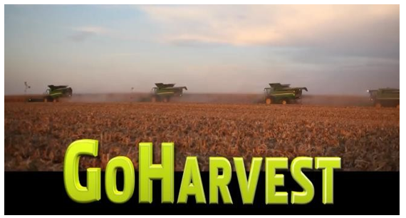

Outils et liens
Téléchargez l'application GoHarvest pour plus d'informations sur les réglages, le calculateur de perte, JDParts, les vidéos, les procedures etc.

Accédez au lien de GoHarvest sur YouTube pour consulter des vidéos détaillées sur la procédure de STOP de la machine, CombineAdvisor, Active Terrain Adjustment et bien plus encore.
